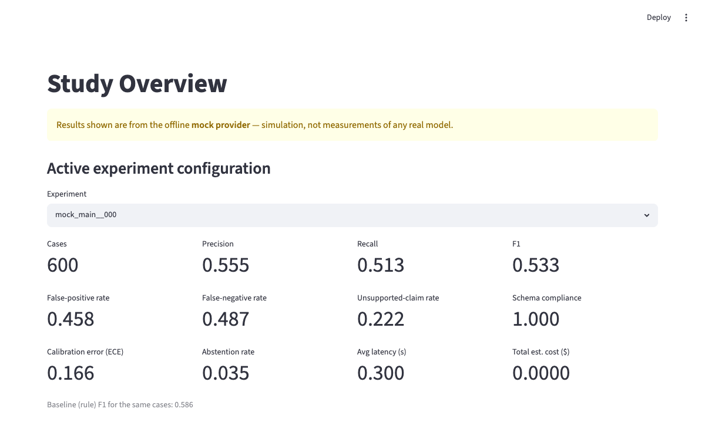
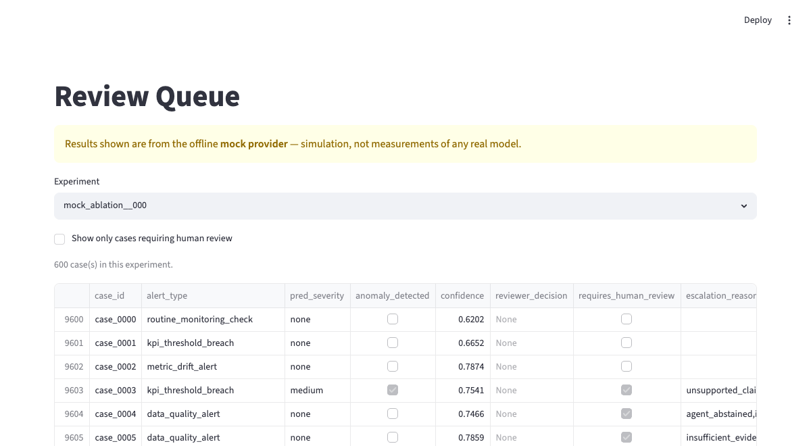
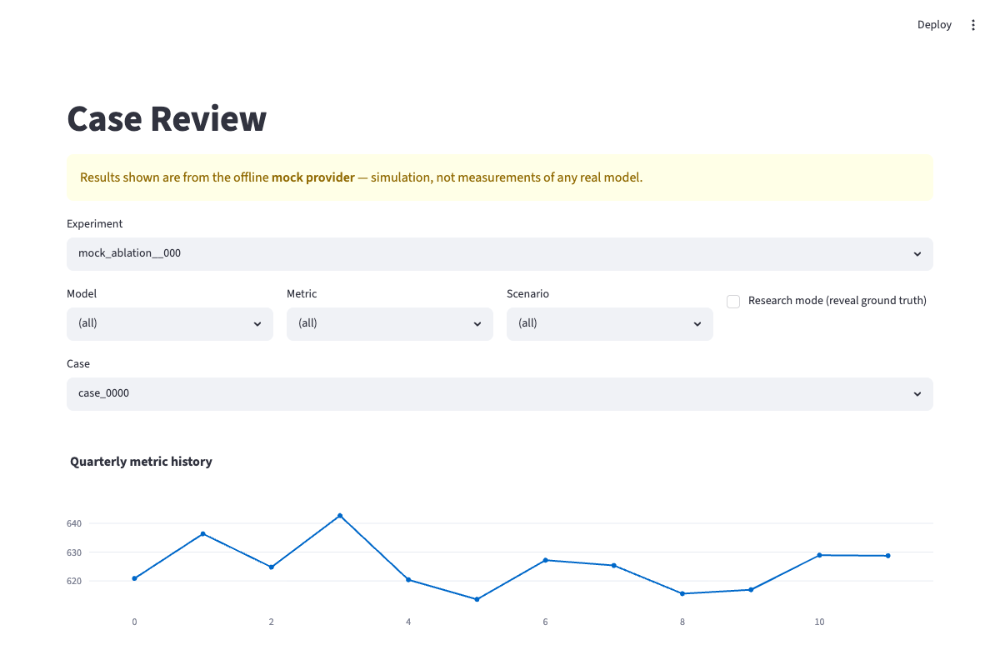
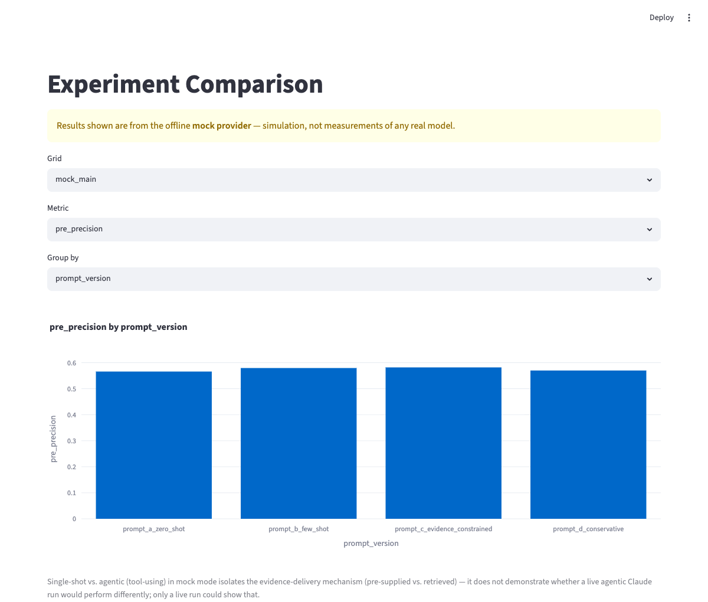
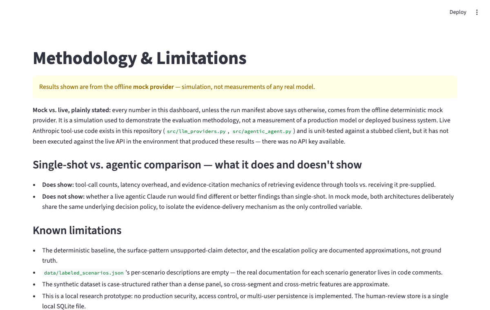
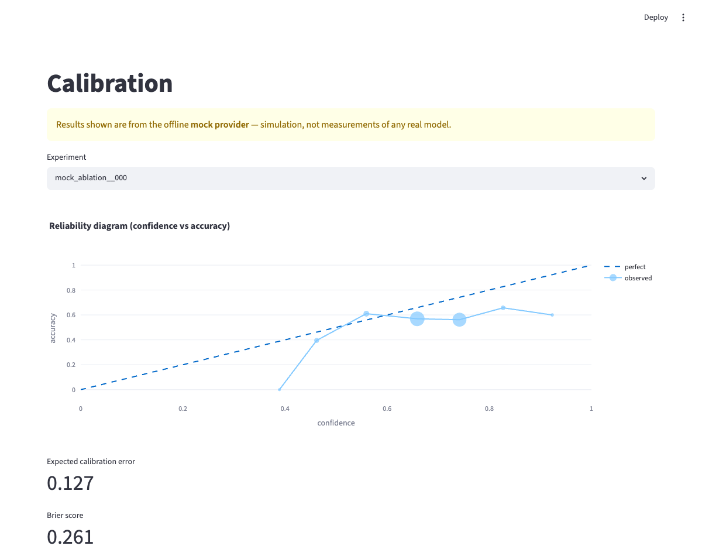

Case study · AI evaluation · Agentic workflow
An evidence-grounded analytical review prototype that compares single-shot and tool-using workflows across synthetic model-monitoring cases. Schema-constrained findings cite traceable evidence IDs, a distinct reviewer agent checks them, deterministic validation and an explicit escalation policy decide what needs a human — evaluated end to end on 600 synthetic cases with 127 passing tests and a 9-page Streamlit dashboard.
Reviewing model-monitoring anomalies is a judgment-heavy, easy-to-get-wrong task. A reviewer has to separate true anomalies from ordinary noise, recognize seasonality and recovery effects, notice when a metric's definition changed rather than its underlying behavior, assemble the evidence that actually supports a conclusion, write the finding up consistently, and leave a clear record of who decided what.
Designed as a prototype for analysts or model reviewers who need to evaluate monitoring anomalies, trace findings back to specific evidence, compare architectures, and retain a clear human decision trail. No real analyst has used it in production — it's a working demonstration of the workflow, not a deployed tool.
No measured baseline is claimed here. Qualitatively, this kind of review tends to be manual and inconsistent: an analyst reads a metric history, applies informal heuristics for what counts as an anomaly, and writes up a finding with no standard way to trace which evidence was used, compare one reviewer's judgment to another's, or check it against a transparent rule.
anthropic/openai and re-running the full suite.Stable, ID-addressable items per case — pre-rendered (single-shot) or retrieved via tools (agentic).
Schema-validated finding citing specific evidence_ids.
Checks evidence support, severity, unsupported claims.
7 checks: evidence IDs exist, numeric consistency, tool-call limit, and more.
Auto-approve or human review, with the exact reason recorded.
Only two calls in the whole pipeline touch a language model per case — the QA agent's finding and the reviewer's check. Everything downstream of those two calls (existence-checking evidence IDs, numeric consistency, the escalation decision) is plain code with no model involved, so it behaves identically on every run and is unit-tested without needing a model at all.
Both architectures draw from the identical per-case evidence — they differ only in delivery: single-shot renders it all into one prompt; agentic retrieves it via bounded tool calls. In mock mode, both conditions deliberately share the same underlying decision policy, so the comparison isolates the evidence-delivery mechanism, not decision quality.
The accuracy difference is not statistically significant (p=0.503) — exactly what the controlled design predicts, since both share the same decision policy. This result should not be read as evidence that the agentic architecture improves, or degrades, model quality. What it demonstrates is that the tool-retrieval, evidence-citation, and tool-call-limit machinery all work correctly end to end under a controlled comparison. Whether a live agentic Claude run would find different or better findings than single-shot is a separate question this mock comparison cannot answer.
The agent's response is validated against a Pydantic schema (src/schemas.py) with extra = "forbid". Key fields, including the new evidence_ids:
AgentFinding {
anomaly_detected: bool
severity: "none" | "low" | "medium" | "high"
anomaly_type: str
summary: str
observations: [str] # facts only
possible_explanations: [str] # hypotheses only, never asserted as fact
supporting_evidence: [EvidenceItem]
evidence_ids: [str] # must reference real items — checked
# deterministically, not by the schema
confidence_score: float # validated in [0, 1]
evidence_sufficiency: "insufficient" | "limited" | "adequate" | "strong"
unsupported_claim_risk: "low" | "medium" | "high"
requires_human_review: bool
abstained: bool
abstention_reason: str | None
}A real logged case (case_0000, from outputs/sample_agent_outputs.json — a mock-mode run, not a live model):
case_id: "case_0000" model_id: "model_08" metric: "score_mean"
scenario_type: "normal_variation"
pred_anomaly: false confidence: 0.5985
pred_severity: "none" evidence_sufficiency: "adequate"
unsupported_claim_risk: "low" requires_human_review: false
deterministic_validation_passed: true
reviewer_decision: "approve"Normal variation, correctly predicted as no anomaly, validation passed, reviewer approved, no escalation — the routine case. The Screenshots section below shows one where evidence, finding, reviewer output, and escalation are all visible together for a single case.
extra = "forbid"): a finding missing a required field, with the wrong type, or with an unexpected extra field is rejected before it reaches any downstream step.false_positive_trap and metric_definition_change cases, where ground truth is never an anomaly. Its per-scenario F1 on those trap types is 0.000 — it looks strong only because it also gets the easier majority of cases right. Raw decision F1 is one axis among several this study evaluates, not a leaderboard between the agent and the rule.Calibration: expected calibration error 0.120, Brier score 0.261.
alert_type is deliberately excluded from agent-facing evidence — it's derived 1:1 from the internal scenario type for several scenarios and would leak the ground-truth answer if ever shown to the agent.Quick start (mock mode, no API key required):
python -m venv .venv && source .venv/bin/activate
pip install -r requirements.txt
python -m pytest # 127 tests, entirely offline
python -m src.experiment_runner # single-shot + agentic + 20 more conditions
python -m src.reporting # regenerate reports/research_summary.md
streamlit run app.py # 9-page dashboard shown belowLive-model experiments are optional, require anthropic and an API key, and are never run by default.






mock_ablation__000); this condition's ECE (0.127) differs slightly from the 0.120 cited above, which is computed on the primary condition — both are real, both are mock-provider figures.The system enforces evidence-based conclusions and an explicit observation-vs-hypothesis distinction, requires uncertainty and abstention fields, flags cases for human review via an explicit escalation policy, versions prompts and models, logs provenance, and uses only synthetic data. The agent is positioned as an assistant to analyst judgment, never as a replacement.